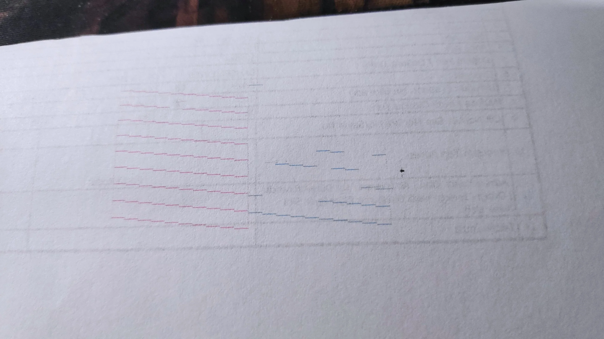

💡 Pro Tip: Join DTF printing communities and forums to access user-shared images, maintenance logs, and real-world troubleshooting experiences. Many users share their nozzle check patterns and solutions in these communities.
Your Printer: Audley 24" I3200 4-Head (2W+2C) Configuration
Audley 24" DTF Printer with 4 I3200 Printheads (2 White + 2 Color)
White Ink System: With 2 white heads, circulation must run continuously
Panel Access: Requires removing screws/panels for internal maintenance
Film Feed: Clean registration wheel regularly to prevent stretched prints
No Low Ink Alarm: Check ink levels manually every print session
1. What is DTF Printer Banding?
Banding in DTF (Direct-to-Film) printing refers to the appearance of visible horizontal lines or streaks on printed images that appear in the direction of printhead carriage movement. Unlike ink smearing across the film, banding appears as inconsistent ink coverage, creating visible lines or streaks that ruin print quality.
Key Characteristics of DTF Banding:
Horizontal Lines: Most common type, running left to right
Inconsistent Coverage: Uneven ink deposition rather than smearing
Pattern Repetition: Often occurs in regular intervals
Color-Specific: May affect certain colors more than others
Example of horizontal banding - visible lines running across the print
Important Note: Banding differs from printhead strikes or nozzle clogs. While clogs create missing dots or lines, banding shows as uneven ink density across the entire print area.
2. Types of DTF Banding Issues
2.1 Nozzle Check Patterns - Good vs Bad
Critical for Audley 2W+2C Configuration:
With 2 white heads and 2 color heads, you need to monitor all 4 printheads carefully. White heads are especially prone to clogging due to titanium dioxide settling.
Real Nozzle Check Examples from DTF Printers:

Real examples: Blue channel issues | Horizontal banding pattern | Color dropouts and missing nozzles
Good Pattern: Complete, unbroken lines for all channels
Bad Pattern: Gaps, missing lines, or irregular patterns
White Channels: Need daily checks due to pigment settling
Color Channels: CMYK should show consistent coverage
2.2 Horizontal Banding
Appearance:
Visible horizontal lines or streaks running left-to-right across the print, in the direction of printhead carriage movement.
Visual Reference: Horizontal banding appears as consistent lines running left-to-right across the print.
Lines appear as "many very small lines, which cluster together"
Most visible in solid color areas
Particularly problematic with red/magenta colors
2.3 Vertical Banding
Appearance:
Vertical lines running perpendicular to printhead movement, often appearing as "flashing lines similar to test strip."
Vertical banding - often caused by encoder strip issues
Common Causes:
Encoder strip damage or contamination
Sensor height adjustment issues
Media advancement problems
Mechanical alignment issues
Audley-Specific Issue: Registration wheel dust accumulation is a common cause of vertical banding and stretched prints on Audley printers.
2.4 Color-Specific Banding
White Ink Banding (Critical for 2W Configuration):
Left: White ink settling issues | Right: Color-specific dropout
Appearance: Gray appearance or complete white ink dropout
Cause: White ink pigment settling (can occur in 15 minutes)
Challenge: Titanium dioxide particles form gel-like substances
2W Advantage: With 2 white heads, you have redundancy but double the maintenance
Color Channel Dropout:
Appearance: Missing ink in specific color channels
Cause: Individual nozzle blockages or damper issues
Cross-Contamination: Colors appearing in wrong channels
2.4 Print Head Alignment Problems
Misregistration Banding:
Colors not aligning properly between printhead passes
Different quality in left-right vs right-left printing directions
Visible in bidirectional printing test patterns
Left: Horizontal banding on red print | Right: Good nozzle check pattern example
3. Audley I3200 4-Head Printer Specific Information
Your Printer Configuration: Audley 4-Head I3200 (2W+2C)
You have the premium Audley configuration with 2 dedicated white heads and 2 color heads. This setup offers:
2 White Heads: Superior white opacity and coverage on dark garments
2 Color Heads: Full CMYK color gamut with excellent saturation
I3200 Advantages: 1.5-3 year lifespan with proper maintenance
Production Speed: 15 sqm/h (4-pass) with excellent quality
White Ink Redundancy: If one white head clogs, you still have backup
Critical for 2W+2C: With 2 white heads, you must maintain BOTH consistently. White ink circulation must run continuously, and both white heads need daily nozzle checks.
Popular Chinese DTF Printer Brands & Models
Manufacturer
Models
Printhead Type
Common Issues
Audley Digital
DTF E602/E604, DTF-24H2, Magic DTF-24"
XP600 / I3200
XP600 durability problems
LINKO
A650 (dual i3200), B-804 (4 heads)
I3200
Better quality, longer lifespan
AIIFAR/Andemes
24" dual printhead configurations
I3200
Superior quality claims
Aily
ER-DTF300PRO (24"/300mm)
2x Epson I1600-A1
Temperature sensitivity
3.1 XP600 Printhead Issues
Known Problems with XP600 Printheads:
Short Lifespan: 6-8 months vs I3200's 1.5+ years
White Ink Problems: "Aren't really designed for commercial DTF printing"
Temperature Sensitivity: Some inks only work below 18°C room temperature
Daily Maintenance: Constant battles with cleaning and ink flow
3.2 I3200 Printhead Advantages
Why I3200 is Superior for DTF:
Quality: Users report "astounding quality" with I3200 heads
Durability: 1.5+ years lifespan vs 6-8 months for XP600
Cost-Effective: Higher initial cost but lower long-term replacement costs
Commercial Grade: Better suited for high-volume DTF production
3.3 Common Import Quality Issues
Typical Problems with Chinese DTF Printers:
Limited Technical Support: Basic troubleshooting from suppliers
Quality Control Variations: Significant differences between units
Hardware Components: SunYung mainboards and Maintop RIP software limitations
Inadequate Ink Systems: Poor circulation systems for white ink
Environmental Sensitivity: Require precise humidity and temperature control
User Experience Quote:"We bought three printers, two feature dual XP600 setups, one features dual i3200 heads... all three have the same issue... after literally 10 seconds of printing all colors break away and white is basically non-existing... loads of streaks/lines appear"
4. Primary Causes of Banding
4.1 Ink Flow Problems (40% of cases)
Low Ink Levels:
Often overlooked fundamental cause of color dropouts
Misaligned printheads cause color registration problems
Bidirectional printing quality differences
Vertical distance misalignment between color and white printheads
4.3 Environmental Factors (15% of cases)
Critical Environmental Requirements:
Humidity: Must maintain 40-60% relative humidity
Temperature: Optimal range 68-77°F (20-25°C)
Air Quality: Dust-free environment to prevent contamination
Stability: Avoid temperature and humidity fluctuations
4.4 White Ink Specific Issues
Pigment Settling:
Titanium dioxide settles due to gravity in 15 minutes
Forms gel-like substances that clog nozzles and dampers
Requires continuous circulation and daily agitation
Maintenance Requirements:
Daily white ink cartridge agitation
Continuous circulation systems during operation
Annual ink bottle cleaning to remove sediment
5. Diagnostic Procedures
5.1 Initial Diagnosis - Nozzle Check
Step 1: Print Nozzle Check Pattern
Always start troubleshooting with this step
Access nozzle check function in your printer software
Print the test pattern
Examine for missing lines, gaps, or inconsistent coverage
Look for specific colors that are missing or printing poorly
Expected Results: A good nozzle check should show clear, unbroken lines for all colors with at least 90% of nozzles functioning properly.
Good Pattern: All nozzles firing correctly
Bad Pattern: Missing lines indicate clogged nozzles
5.2 Environmental Assessment
Check These Environmental Factors:
Measure current humidity level (should be 40-60%)
Check ambient temperature (should be 68-77°F)
Assess air circulation and drafts
Examine workspace for dust and contaminants
Verify printer has been at stable conditions for 30+ minutes
5.3 Ink System Inspection
Ink System Diagnostic Checklist:
Check all ink levels - ensure above minimum marks
Visually inspect ink lines for air bubbles
Examine ink cartridge connections for air leaks
Check white ink for separation or settling
Verify damper condition (if accessible)
Assess waste ink bottle level
5.4 Software Settings Review
Critical Settings to Verify:
Print resolution (720x1800, 720x2400, or 720x3600)
Print mode (bidirectional vs unidirectional)
Feed adjustment mode (should be "Heavy")
Feed adjustment type (should be "Strong")
Ink density settings
Environment profile selection
6. Step-by-Step Solutions
6.1 Basic Printhead Cleaning
When to Perform:
After every 100 prints or when banding appears. For Audley printers, clean every 2-3 days minimum.
Proper printhead cleaning technique using lint-free cloth and cleaning solution
Materials Needed:
Lint-free cloths or microfiber cloths
DTF printhead cleaning solution or 90% isopropyl alcohol
Protective gloves
Cotton/foam swabs
Procedure:
Power down printer and unplug from power source
Access printhead by moving it to maintenance position
Remove ink cartridges and secure in plastic bags
Exterior cleaning: Dampen lint-free cloth with cleaning solution
Gentle wiping: Clean around printhead exterior to remove ink buildup
Nozzle plate cleaning: Use cotton swabs dampened with cleaning solution to gently dab nozzle plate
Automated cleaning cycle: Run printer's built-in cleaning function
Reinstall cartridges and run another nozzle check
6.2 Deep Cleaning for Persistent Clogs
When to Perform:
When basic cleaning doesn't resolve issues
Additional Materials:
Small syringe (without needle)
Silicone tubing
Specialized DTF cleaning solution
Advanced Procedure:
Soak method: Place lint-free cloth soaked in cleaning solution on printhead for 10-15 minutes
Syringe cleaning: Gently inject cleaning solution through nozzle plate using syringe
Target specific areas: Focus on colors showing the most problems
Allow drying time: Let printhead dry completely for 15-20 minutes before reinstalling
6.3 White Ink System Maintenance (Critical for 2W Heads)
Daily White Ink Care for Audley 2W Configuration:
White ink circulation system - essential for 2 white head maintenance
Agitation: Shake white ink bottles thoroughly (2-3 minutes)
Circulation: Run white ink circulation system continuously
Monitoring: Check both white heads for separation or settling
Testing: Print white ink test pattern to verify both heads
Weekly White Ink Maintenance:
System Prime: Use "Load Ink" function to prime white ink system
Filter Check: Inspect white ink filters for clogs
Line Inspection: Check all white ink lines for separation
Waste Management: Empty waste ink bottle if needed
6.4 Environmental Control Solutions
Humidity Control (Critical for Audley Printers):
Maintain 50% humidity for optimal Audley printer performance
Target Range: Maintain 50% or higher (critical for Audley)
Monitoring: Use digital hygrometer for continuous tracking
Adjustment: Use humidifier/dehumidifier as needed
Consistency: Avoid rapid humidity changes
Temperature Management:
Optimal Range: 68-77°F (20-25°C)
Stability: Minimize temperature fluctuations
Air Circulation: Ensure adequate ventilation without direct drafts
Equipment Warm-up: Allow 30 minutes for temperature stabilization
6.5 Capping Station Maintenance
Essential for Audley Printers:
Capping station cleaning - prevents ink buildup that causes banding
Procedure:
Use syringe to extract excess ink from capping station
Apply cleaning solution to dissolve dried ink
Wipe cap tops with lint-free cloth
Check seal integrity - replace if damaged
6.6 Encoder Strip Cleaning (Vertical Banding Fix)
Critical for Audley Registration Issues:
Encoder strip cleaning - essential for fixing vertical banding
Procedure:
Locate encoder strip (clear plastic strip with markings)
Dampen lint-free cloth with isopropyl alcohol
Gently wipe entire length of strip
Check for damage or scratches
Clean registration wheel to prevent stretched prints
7. Preventive Maintenance Schedule
Daily Maintenance (5-10 minutes)
Turn on white ink circulation system
Perform nozzle check before printing
Clean around printhead exterior
Wipe down wiper blades
Check ink levels
Empty waste ink bottle if needed
Agitate white ink bottles (2-3 minutes)
Weekly Maintenance (30-45 minutes)
Deep clean printhead if needed
Clean capping station cap tops
Flush capping station with cleaning solution
Clean pinch rollers thoroughly
Clean encoder strip with isopropyl alcohol
Check for air bubbles in ink lines
Inspect white ink system for separation
Monthly Maintenance (1-2 hours)
Power ink flush if severe nozzle issues
Grease carriage rails if squeaking
Clean encoder disk
Comprehensive system calibration
Check all mechanical components
Replace ink filters
Clean white ink bottles interior
Quarterly Maintenance (2-3 hours)
Replace ink cartridges
Replace ink pads
Replace white ink filters
Deep clean white ink bottles
Professional calibration check
Damper replacement assessment
Complete system performance review
Extended Downtime Preparation:
If your printer will be idle for more than 3 weeks, contact technical support to schedule an appointment and prepare the printer for extended downtime or storage. Failure to do so can result in permanent printhead damage.
8. Software Settings & Optimizations
8.1 Resolution Adjustments for Banding Reduction
Progressive Resolution Increase:
Resolution
Quality Level
Print Speed
Banding Reduction
720x1800 DPI
Standard
Fast
Basic
720x2400 DPI
Improved
Medium
Better
720x3600 DPI
Premium
Slow
Best
8.2 Critical Print Mode Settings
OmniDTF UI Software Settings:
Feed Adjustment Mode: Set to "Heavy" for best results
Feed Adjustment Type: Set to "Strong" for optimal coverage
Print Direction: Switch to unidirectional for better quality
Ink Density: Increase by 20-25% if experiencing light banding
Environment Selection:
Start with 720x1800 for speed
Upgrade to 720x2400 if banding persists
Use 720x3600 for critical quality applications
8.3 Advanced RIP Software Optimizations
Color Management:
Ensure accurate color profiles are loaded
Properly configure white underbase layers
Adjust ink coverage settings for better saturation
Use color boost settings (20-25%) for problem areas
Print Job Settings:
Waveform Selection: Try different waveforms (Waveform 4 often better for cyan)
Feather Settings: Adjust up to 600 for solid colors
Pass Count: Increase passes for better coverage
Drying Time: Adjust inter-pass delays for better ink settling
9. Hardware Modifications & Upgrades
9.1 Printhead Upgrades
Upgrade Recommendations:
Current Printhead
Recommended Upgrade
Lifespan Improvement
Quality Improvement
Single XP600
Dual XP600 System
Same (6-8 months)
300% faster printing
XP600
I3200
1.5+ years
Astounding quality
Single I3200
Dual I3200
Same (1.5+ years)
Higher throughput
9.2 Ink System Improvements
Damper Upgrades (Critical for Audley):
Damper replacement - essential consumable part for maintaining ink flow
High-Quality Dampers: Replace with commercial-grade dampers
Tube Diameter: Use smaller diameter tubes (2mm vs 3mm) for better siphon action
Filter Systems: Add inline filters to prevent contamination
Pressure Regulation: Install pressure regulation for consistent flow
Spare Parts: Keep spare dampers on hand - essential for Audley printers
White Ink Circulation System:
White ink circulation system with pumps and filters
Continuous Circulation: Install dedicated white ink circulation pumps
Agitation System: Add automatic agitation for ink bottles
Closed Loop Design: Implement closed-loop white ink systems
Temperature Control: Add heating elements for cold environments